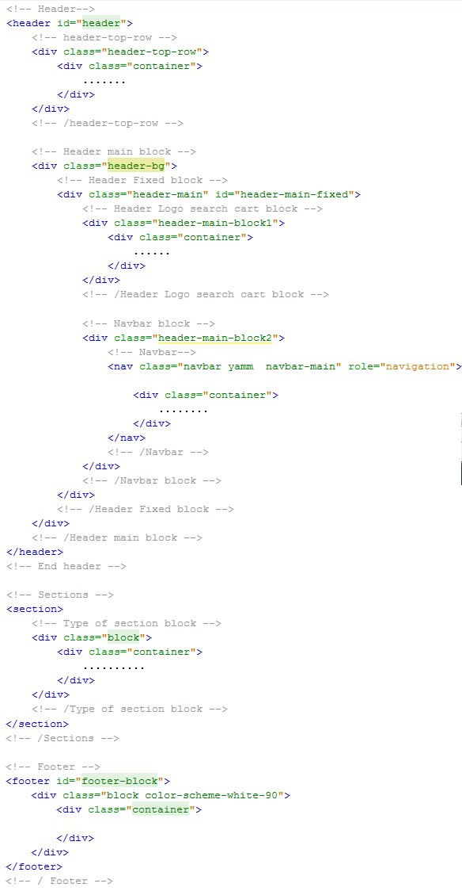

Created: 01/08/2015
By: MosaicDesign
Email: support@mosaicdesign.uz
Thank you for purchasing my theme. If you have any questions that are beyond the scope of this help file, please feel free to email via my user page contact form here. Thanks so much!
This theme is a responsive layout with container and one, two, three and four columns. Header informations are placed within “header” html5 tag. Footer informations are placed within “footer” html5 tag. All other informations are placed within “section” tags. The general template structure is the same throughout the template. Here is the general structure.
If you would like to change the backgroung color of sections, add this classes:
.color-scheme-1 .color-scheme-2 .color-scheme-3 .color-scheme-white-90 .color-scheme-dark-90
To change default header to light header. Add class light-header
header id="header" class="light"
Two version of section header H1. For light and for dark. And align left default, align center add "center" to class
div class="header-for-light" div class="header-for-black" div class="header-for-light center" div class="header-for-black center"
More version of second page header. light and dark / center and left
div class="second-page-header" div class="second-page-header dark" div class="second-page-header center" div class="second-page-header dark center"
Two version of side-article. Default and dark
div class="side-article" div class="side-article light"
in product block icons showing in hover
div class="product-icons" - hover visible div class="product-icons show" - always visible
I'm using two CSS files in this theme. The first one is a generic reset file. Many browser interpret the default behavior of html elements differently. By using a general reset CSS file, we can work round this. This file also contains some general styling, such as anchor tag colors, font-sizes, etc. Keep in mind, that these values might be overridden somewhere else in the file.
The file is separated into sections using:
1. Common styles
1.1. Font-face
1.2. Content colors styles
1.3. Revolution slider
2. Header styles
3. Navbar styles
4. Product style
5. Header block of secondary pages
6. Shortcode
7. All Block styles
8. Page Shopping cart
9. Page Checkout
10. Page Blogs
11. Page Products grid
12. Page Product details
13. Footer styles
14. Block background style
15. Backgrounds
If you need dark version of templade add dark-version.css
This theme imports three Javascript files.
// Color Filter
$(".colors li a").each(function() {
$(this).css("background-color", "#" + $(this).attr("data-rel")).attr("href", "#" + $(this).attr("data-rel"));
});
// Categories Menu Manipulations
$(".ul-side-category li a").click(function() {
var sm = $(this).next();
if (sm.hasClass("sub-category")) {
if (sm.css("display") === "none") {
$(this).next().slideDown();
}
else {
$(this).next().slideUp();
$(this).next().find(".sub-category").slideUp();
}
return false;
}
else {
return true;
}
});
I've used the following images, icons or other files as listed.
Once again, thank you so much for purchasing this theme. As we mentioned at the beginning, we'd be glad to help you if you have any questions relating to this theme. No guarantees, but we'll do my best to assist. If you have a more general question relating to the themes on ThemeForest, you might consider visiting the forums and asking your question in the "Item Discussion" section.
Mosaic Design